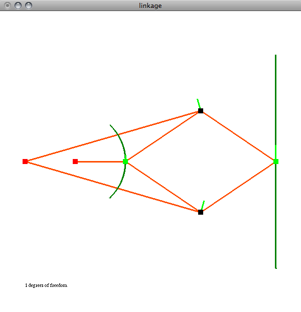
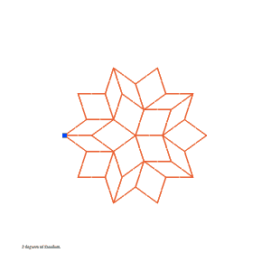
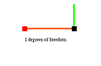
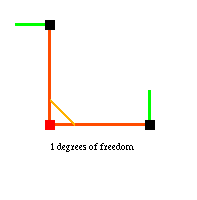

Note that there is now a web version of this software.

A screenshot of the Peaucellier-Lipkin linkage, the first planar linkage to convert circular motion into linear motion. Invented in 1864, it was used in steam engines to convert linear piston motion into rotation.

A Transformable Penrose Tiling. Read more about these linkages here.

A linkage from wikipedia: "Simple linkages are capable of producing complicated motion."
Mechanical Linkages in Python
This page provides instructions and Python source code for simulating the behavior of mechanical linkages using Rigidity theory. The software was written to simulate the behavior of transformable Penrose tilings, but is general enough to simulate many planar linkages.
Downloads
You can download the source code for this software and some example linkages at:
https://github.com/hrldcpr/linkages/tree/master/python
The main program is the file main.py; when run it prints its usage to the console, which is:
usage: python main.py [<linkage-file> [<step-size=1> [<max-step=1>]]]
click to add vertices
click to (de)select a vertex
and middle-click (alt-click) another vertex to add an edge
click to (de)select an edge
and middle-click (alt-click) an adjacent edge to fix their angle
right-click (control-click) to place or remove the attractor,
which attracts the selected vertex
press 'f' to fix the selected vertex
press 'd' to delete the selected component
press 'c' to clear everything away
press 'l' to load from saved_linkage.txt
press 's' to save to saved_linkage.txt
press 'v' to cycle through viewing options
press 'i' to toggle information display
press 'm' to maximize/minimize to/from fullscreen
press 'p' to print image to screenshot.png
press 'r' to toggle motion recording
to screenshot0000.png through screenshot9999.png
Also see the Transformable Penrose Tilings, which include linkage files this software can load and simulate.
For example, if you download the second-order transformable Penrose linkage penrose2t.txt, you can run it with:
python main.py penrose2t.txt 10
(the step-size=10 is unnecessary, but makes the software use coarser numerical integration, running faster on a complex linkage like this)
Example Usage
Left-clicking creates vertices. A single unconstrained vertex has 2 degrees of freedom in the plane, corresponding to its position. Thus there are 2 different shades of green vector emerging from the vertex, showing a basis of the space of possible velocities in the system:
Left-clicking on a point selects it; middle-clicking (alt-clicking) on another point connects the two points with a rigid rod. Two points connected by a rod form the simplest rigid linkage, which has 3 degrees of freedom, corresponding to its position and orientation:
Indeed, every unconstrained rigid linkage has 3 degrees of freedom since its structure is constant, so all that can be varied are its position and orientation. A triangle, for example, is rigid, and thus has only 3 degrees of freedom:
Left-clicking on an edge selects it; middle-clicking (alt-clicking) on an adjacent edge fixes the angle formed by the two edges. The fixed angle below is entirely equivalent to the triangle above, but I think of the two types of constraints as having different semantics—a rod between vertices, as above, corresponds to a physical rod, whereas a fixed angle, as below, corresponds to a rigid joint (as opposed to the default flexible joints):
Pressing f fixes the position of the selected vertex. If you fix two vertices of a linkage, you remove the 'trivial' motions of translation and rotation, leaving only structural degrees of freedom. Thus a triangle with two fixed vertices has zero degrees of freedom:
A quadrilateral with two fixed vertices, on the other hand, has one degree of freedom, and is thus a non-rigid structure. Right-clicking (control-clicking) places an 'attractor' point, which the selected vertex attempts to move toward, within the constraints of the linkage. Pressing t enables tracking for the selected vertex, so that the path the vertex follows towards the attractor point will be drawn. For example, here is a quadrilateral linkage with tracking enabled for the mobile vertices, and the selected vertex moving towards the gray attractor point:

Note the single shade of green vector emerging from the two mobile vertices in the quadrilateral above. These vectors have the same magnitude and direction because the two vertices are constrained by the linkage to move along congruent circles. The two vertices of the right-angle linkage below, on the other hand, must always have perpendicular velocity directions, and the shorter rod's vertex must always have a smaller velocity magnitude, since it traverses a smaller circle:
Rigidity Theory
The software simulates linkages by creating a rigidity matrix relating the vertex velocities to one another. It then solves for the possible velocities, and when an 'attractor' point is placed, the vertices are numerically integrated along these velocities (which are continually recomputed) such that the selected vertex moves most towards the attractor.
Suppose we have a vertex with position p1=(0,0) and another vertex at p2=(1,0), and suppose the two vertices are connected by a rod, as pictured below:
The constraint imposed by connecting two vertices with a rigid rod is that the velocities of those vertices along the rod must agree, since otherwise the rod would deform. Thus we want
v1·(p2-p1)=v2·(p2-p1),
which in terms of scalars is
(p2x-p1x)v1x+(p2y-p1y)v1y=(p2x-p1x)v2x+(p2y-p1y)v2y
or equivalently
(p2x-p1x)v1x+(p2y-p1y)v1y+(p1x-p2x)v2x+(p1y-p2y)v2y=0
which we can represent as the matrix equation:
Av=0
where
A=(p2x-p1x, p2y-p1y, p1x-p2x, p1y-p2y)=(1,0,-1,0)
is the rigidity matrix and
v=(v1x, v1y, v2x, v2y)
is the vector of all the velocities.
The solution to this matrix equation is the nullspace of A (found numerically using singular value decomposition) which in this case is a 3-dimensional space, since both vertices can have any y-velocity, but must have equal x-velocities (lest the rod deform). The three different shades of green vectors emerging from the vertices correspond to three basis vectors of this space. One can see that the dark green basis is va=(0,1,0,0), i.e. the arbitrary y-velocity of vertex 1, the light-green basis is vb=(0,0,0,1), the arbitrary y-velocity of vertex 2, and the medium-green basis is vc=(1,0,1,0), the equal x-velocities of the two vertices.
If we fix the position of vertex 1, it adds a new constraint to the rigidity matrix. Specifically, it requires v1=0,
which in terms of scalars is the two equations v1x=v1y=0, which we can represent by adding two rows to the rigidity matrix, resulting in the new rigidity matrix:
A=(1,0,-1,0; 1,0,0,0; 0,1,0,0)
This new rigidity matrix has a nullspace of dimension 1, with the one basis vector va=(0,0,0,1)
corresponding to the arbitrary y-velocity of vertex 2; all other velocities are constrained to zero:

Finally, if we fix the position of vertex 2, the rigidity matrix becomes:
A=(1,0,-1,0; 1,0,0,0; 0,1,0,0; 0,0,1,0; 0,0,0,1)
This matrix has a nullspace of dimension zero, which means there are no nonzero velocities satisfying the constraints, so the entire system is fixed in place:
Fixed angles affect the rigidity matrix in a similar way to rods, adding one row to the matrix which constrains the rotational velocities from the fixed angle to be equal.
For example, the rigidity matrix for the below right-angle linkage would be:
A=(1,0,0,0,0,0; 0,1,0,0,0,0; 1,0,-1,0,0,0; 0,1,0,0,0,-1; 0,0,0,1,1,0)
where the first two rows fix vertex 1, the third and fourth row represent the rods, and the final row represents the fixed angle, saying in this case that v2y+v3x=0, or equivalently v3x=-v2y, i.e. an upward motion of vertex 2 must be matched by a leftward motion of vertex 3:

Note that the interface for this software requires adjacent rods to fix an angle, and thus fixing an angle is always equivalent to adding a third rod; mathematically, however, if we had no rods but only a fixed angle, more motion would be possible. In the above example, for instance, if there were no rods but the angle was still fixed, then vertex 2 could move freely to the left and right and similarly vertex 3 could move freely up and down, since those motions wouldn't change the angle.
hrldcpr at gmail com 2007-06-15
updated: 2008-12-28